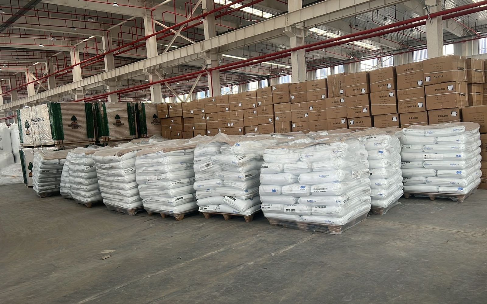

始发仓
义乌还是深圳：中伊 TIR 卡航从哪个始发仓走
询价要填始发仓，因为车不是从厂门开。中伊 TIR 多数货在义乌苏溪和深圳平湖里选。广州、上海，或出境口岸监管区交接，只在货赶不上这两个仓的班期时用。运价询价。交付是仓到关，CPT / DAP。
- 义乌苏溪收华东货：浙江、江苏、上海腹地、义乌市场货
- 深圳平湖收华南货：广东电子、汽配、机械
- 两个仓都是每周二、周五发车
- 到德黑兰西关 21–23 天从乌恰起算，不是从始发仓起算
- 国内段到乌恰一般 7 天内，另计
始发仓是什么
是监管堆场：收货、对装箱单、装车、按 TIR 施封。书面报价从这座堆场到目的海关仓库——德黑兰西关、阿普林旱港或马什哈德海关——不到伊朗街道门牌。报价没写上门提货，就不从工厂收货。
选义乌苏溪
货已经在浙江、江苏或义乌市场体系里，或几家供应商要拼一挂车，走苏溪。小纸箱、混 SKU、贸易公司拼货这里常见。工厂在华东内陆，先拉去平湖再封伊朗车，通常只多国内段，乌恰时钟并不提前。
选深圳平湖
货在珠三角：电子、汽配、逆变器，或已经在广东仓的机械，走平湖。华南工厂硬要先到义乌，等于 TIR 封志前再加一段国内。第 9 类锂电无论哪个仓，第一封询价就要 16 项 MSDS 和 UN 包装说明。
换仓不会改的部分
乌恰之后走廊一样。直达车目前 21–23 天到德黑兰西关、18–21 天到马什哈德；换装 26–30 和 24–28。吉尔吉斯 0.4% 发票税只在乌恰 / 伊尔克什坦线，不含在运费里。霍尔果斯线不加这项，也没有公布天数。伊朗关税和清关仍由收货人持证清关行做。条款仍是 CPT / DAP 到关，不是 DDP。

询价时怎么写仓
三样材料（目的海关、HS、公斤、立方米）里带上工厂城市。已经定仓就写义乌苏溪或深圳平湖。没定，回复会指定一个。广州、上海或口岸交接，只在这两个周班仓赶不上下一次周二或周五时才给。
常见问题
工厂在浙江或江苏，走哪个仓？
义乌苏溪。华东内陆货到苏溪通常比拉去平湖更省时间和费用。
货在广东，走哪个仓？
深圳平湖。华南电子、汽配和机械多数在这里装车。
两个仓是同一天发车吗？
是。义乌与深圳平湖都是每周二、周五发车。
始发仓会改变 21–23 天这个数吗？
不会。这个数从乌恰口岸起算。国内段到乌恰一般 7 天内，另计。
相关：中国到伊朗汽运怎么询价 · 乌恰至德黑兰 21–23 天 · 发车日志